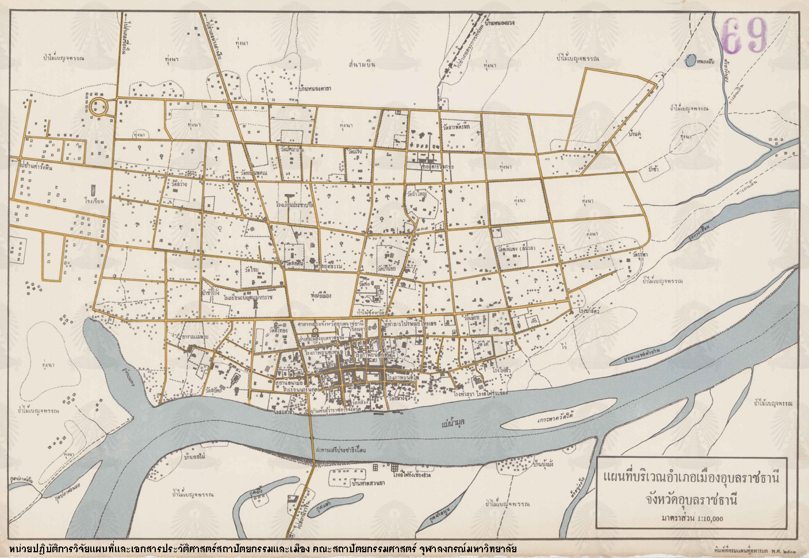

ยินดีต้อนรับสู่จังหวัดอุบลราชธานี
จังหวัดอุบลราชธานีเต็มไปด้วยแหล่งท่องเที่ยวทางธรรมชาติ วัฒนธรรม และอาหารอร่อยที่ไม่ควรพลาด
ประวัติเมืองอุบลราชธานี

การตั้งเมืองอุบลราชธานี ในรัชสมัยพระบาทสมเด็จพระพุทธยอดฟ้าจุฬาโลกมหาราช บ้านเมือง ค่อนข้างสงบก็ทรงมี นโยบายที่จะ จัดตั้งเมือง
ให้มากขึ้น ทั้งนี้เพื่อเป็นการรวบรวมไพร่พลให้เป็นปึกแผ่น เพื่อความสงบสุข สมเด็จฯ กรมพระยาดำรง ราชานุภาพได้ทรงกล่าวถึง เรื่องนี้ว่า
“…รัชกาล ที่ 1 ถึงรัชการที่ 3 ให้เจ้าเมืองร้าง เที่ยวเกลี้ยกล่อมหา ผู้คนมาเป็นพลเมือง โดย ไม่ต้องใช้อำนาจ อาจทำได้ด้วยยินดีด้วยกัน ทุกฝ่ายก็สำเร็จ
ประโยชน์ ถึงความมุ่งหมาย เจ้าเมืองไหนเกลี้ยกล่อมคนมาได้มาก ก็ได้ทรัพย์เศษส่วน และได้ผู้คนสำหรับอาศัยใช้สอยมากขึ้น ก็เต็มใจขวนขวาย ตั้งบ้านเมือง
ฝ่ายราษฎรที่ไปเที่ยวหลบลี้ เดือดร้อนลำบากมากอยู่ เมื่อรู้ว่า บ้านเมืองเรียบร้อยอย่างเดิม ก็ยินดีที่จะกลับมา โดยมาก……” คงจะเป็น เพื่อสนองตอบ พระบรมราโชบาย
3ในการตั้งเมืองดังกล่าวมาแล้ว และเพื่อความอุดมสมบูรณ์ในการประกอบอาชีพของ ไพร่บ้านพลเมือง “….ในปี พ.ศ.2329 (จุลศักราช 1148 ปีมะเมีย นพศก) พระประทุมจึงย้ายครอบครัวไพร่พลมาตั้งอยู่
ณ ตำบลแจระแม ตือตำบล ที่ตั้ง อยู่ทาง ทิศเหนือ เมืองอุบลปัจจุบัน…..”
สถาปนาเมืองอุบลราชธานี พ.ศ.2335 พระประทุมสุรราช (ท้าวคำผง) ได้พาพรรคพวกไพร่พลตั้งอยู่ที่ ตำบลห้วยแจระแม (บริเวณบ้าน ท่าบ่อ ในปัจจุบัน)
ด้วยความปกติสุขเป็นเวลานานหลายปี จนกระทั่ง พ.ศ.2334 (จุลศักราช 1153 ตรีศก) อ้ายเชียงแก้ว ซึ่งตั้งบ้านอยู่ที่ตำบลเขาโองแขวง เมืองโขง คิดการกบฎ
พาพรรคพวก ไพร่พลเข้ายึดนครจำปาศักดิ์ พระเจ้าองค์หลวง (ไชยกุมาร) เจ้าเมืองซึ่งกำลังป่วยอยู่ก็มี อาการป่วยทรุดหนัก และถึงแก่พิราลัย อ้ายเชียงแก้วจึงยึดเมือง
นครจำปาศักดิ์ไว้ได้ ความทราบ ถึงพระบาทสมเด็จพระพุทธยอดฟ้าจุฬาโลกมหาราช จึงโปรดเกล้าฯ ให้เจ้าพระยานครราชสีมา (ทองอิน) เมื่อครั้งเป็น พระพรหม ยกกระบัตร
ยกกองทัพเมืองนครราชสีมามาปราบกบฎอ้ายเชียงแก้ว อย่างไรก็ดีขณะที่กองทัพนครราชสีมายกมาไม่ถึงนั้น พระประทุมสุรราช (ท้าวคำผง) และท้าวฝ่ายหน้า ผู้น้อง ที่ตั้งอยู่บ้านสิงห์ท่า
(เมืองยโสธร) ได้ยกกำลังไปรบอ้ายเชียงแก้วก่อน ทั้งสองฝ่าย ได้สู้รบกันที่บริเวณ แก่งตะนะ (อยู่ในท้องที่ อำเภอโขงเจียม) กองกำลัง อ้ายเชียงแก้วแตกพ่ายไป
อ้ายเชียงแก้วถูกจับได้ และถูกประหารชีวิต เมื่อกองทัพ เมืองนครราชสีมายกมาถึงเมืองจำปาศักดิ์ เหตุการณ์ก็สงบเรียบร้อยแล้ว จึงพากันยกกองทัพ ไปตีพวกข่า “ชาติกระเสงสวาง
จะรายระแดร์” ซึ่งตั้งอยู่ฝั่งตะวันออกแม่น้ำโขง จับพวกข่าเป็นเชลย ได้เป็นจำนวนมาก จากความ ดีความชอบในการปราบปรามกบฎอ้ายเชียงแก้วนี้เอง พระบาทสมเด็จพระพุทธยอดฟ้า
จุฬาโลกมหาราช จึงได้ โปรดเกล้าฯ แต่งตั้งให้ ท้าวฝ่ายหน้าเป็น พระวิไชยราชขัตติยวงศา ครองนครจำปาศักดิ์ และโปรดเกล้าฯ แต่งตั้งให้ พระประทุม สุรราช เป็นพระประทุม
วรราชสุริยวงศ์ ครอง เมืองอุบลราชธานี พร้อมกับยกฐานะบ้านห้วยแจระแมขึ้นเป็นเมืองอุบลราชธานี เมื่อวันจันทร์ แรม 13 ค่ำ เดือน 8 จุลศักราช 1154 (พ.ศ.2335) ดังปรากฎ
ในพระสุพรรณบัตรตั้ง เจ้าประเทศราชในรัชกาล พระบาทสมเด็จพระพุทธยอดฟ้าจุฬาโลกมหาราช ว่า “….ด้วยพระบาทสมเด็จพระพุทธเจ้า ผู้ผ่าน พิภพกรุงเทพ มหานครศรีอยุธยา
มีพระราชโองการโปรดเกล้า โปรดกระหม่อม ตั้งให้ พระประทุม เป็นพระประทุมวรราช สุริยวงศ์ ครองเมือง อุบลราชธานี ศรีวนาไลยประเทศราช เศกให้ ณ วัน 2 แรม 13 ค่ำ
เดือน 8 จุลศักราช 1154 ปีจัตวาศก…”
เจ้าเมืองอุบลราชธานีในอดีต ที่พระมหากษัตริย์แห่งกรุงรัตนโกสินทร์ทรงพระกรุณาโปรดเกล้าฯ แต่งตั้งมีจำนวนทั้งสิ้น 4 ท่านดังนี้
1. พระประทุมวรราชสุริยวงศ์ (พ.ศ.2335-2338) นามเดิม ท้าวคำผง บุตรเจ้าพระตา เป็นบุคคลสำคัญ ในการสร้างบ้าน แปงเมืองอุบล โปรดให้สร้างคู ประตูเมือง หอโฮงเจ้านายต่างๆ
สร้างวัดหลวง และเสนาสนะ อาทิ สิม อาฮาม หอระฆัง พระพุทธรูป สิ่งก่อสร้าง ล้วนเลียนแบบ ศิลปแบบหลวงพระบาง
2. พระพรหมวรราชสุริยวงศ์ (พ.ศ.2338-2388) นามเดิม พรหม น้องชายพระประทุม (คำผง) เป็นบุตรชาย คนเล็กของ เจ้าพระตา เป็นผู้ก่อสร้างวัด ป่าหลวง (วัดป่าหลวงมณีโชติ) นำไพร่พลผู้ศรัทธาสร้างพระพุทธรูป
องค์ใหญ่ก่ออิฐถือปูน เป็นที่ เคารพสักการะของชาวอุบลฯ มีชื่อว่า พระเจ้าใหญ่ อินทร์แปลง ปัจจุบัน เป็นพระประธาน ในวิหารวัดมหาวนาราม
3. พระพรหมราชวงศา (พ.ศ.2388-2409) นามเดิม กุทอง สุวรรณกูฏ บุตรพระพรหม (ทิดพรหม) ในสมัยของท่าน ธรรมยุติกนิกาย แพร่หลายในเมือง อุบลฯ เพื่อสนองพระราชประสงค์ของ พระบาทสมเด็จพระจอมเกล้าเจ้าอยู่หัว
จึงโปรดให้สร้างวัดสุปัฏนาราม และบรรดา อุปฮาด ราชวงศ์ ราชบุตร ร่วมกัน สร้างวัดศรีทอง (ศรีอุบลรัตนาราม) วัดสุทัศน์ ซึ่งเหตุการณ์สำคัญในสมัยนี้คือการเข้าร่วมสงคราม ขับไล่ญวน
4. เจ้าพรหมเทวานุเคราะห์วงศ์ (พ.ศ.2409-2425) เจ้าพรหมเทวา (เจ้าหน่อคำ) เป็นพี่ชายเจ้าจอมมารดา ด้วงคำใน รัชกาลที่ 4 เจ้าราชวงศ์ จำปาศักดิ์ บุตรเจ้าเสือหลานเจ้าอนุวงศ์ ในสมัยของท่านได้สร้างวัดไชยมงคล
ซึ่งเป็นวัดธรรมยุตที่สี่ ในจังหวัดอุบลราชธานี สิ่งที่พึงสังเกต คือ ความขัดแย้งระหว่าง เจ้าเมืองอุปฮาด ราชวงศ์ รุนแรง เนื่องจากฝ่ายเจ้านายอุบลฯ ไม่พอใจที่ โปรดเกล้าฯ แต่งตั้งให้ เจ้าหน่อคำเป็นเจ้าเมือง ในสมัยนั้นจึง
เกิดการทะเลาะ วิวาทขัดแย้งกัน กลั่นแกล้งกันอยู่เสมอ ท้ายที่สุด ราวปี พ.ศ.2412 เกิดกรณี เมืองไซแง ได้เกิดความบาดหมาง ทวีความรุนแรง ต่างฝ่ายต่างเกล่าโทษ ซึ่งกัน และกัน เจ้าพรหม กล่าวหาว่า อุปฮาด ราชวงศ์
ราชบุตร ขัดขวางไม่ให้เก็บเงินส่วย จากไพร่ ข้างฝ่ายอุปฮาด ราชวงศ์ ราชบุตร ก็กล่าวหาว่า เจ้าพรหม ฉ้อราษฎร์บังหลวง ทั้งสองฝ่ายจึงลงมา สู้ความกันที่กรุงเทพฯ จนพากันถึงแก่อสัญกรรม
ต่างฝ่ายต่างสูญเสียทรัพย์สินส่วนตัวเป็นจำนวนมาก พ.ศ. 2418 เกิดศึกฮ่อ เจ้าพรหมเทวาถูกเกณฑ์ไปราชการทัพฮ่อ หลังศึกฮ่อได้อัญเชิญพระพุทธรูป 2 องค์ คือ พระทองทิพย์ และพระทอง ประดิษฐาน
ที่วัดศรีทอง และวัดไชยมงคล